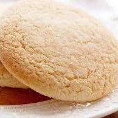

Homepage
English Tea Cakes
A small old-fashioned cookie made to be enjoyed with your favorite hot beverage.

1 Cup Sugar
1 Cup Butter
2 Eggs
1 Teaspoon Baking Soda
3 Tablespoons Sour Milk
3 Cups Flour
1/4 Teaspoon Salt
1 Teaspoon Vanilla
Cream sugar and butter.
Add Eggs and mix with baking soda and sour milk.
Add flour, salt and vanilla. Mix until combined.
Place into fridge until chilled then roll dough into a log roughly two inches in diameter. Cut into 1/4 inch slices and place on greased baking sheet.
Bake in a 400° oven for 8 minutes.